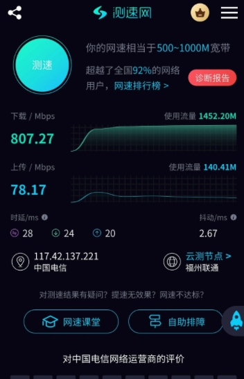
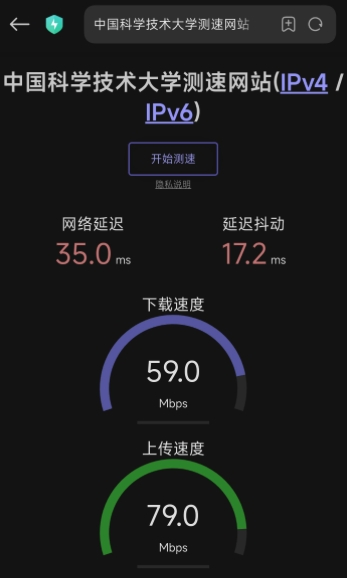
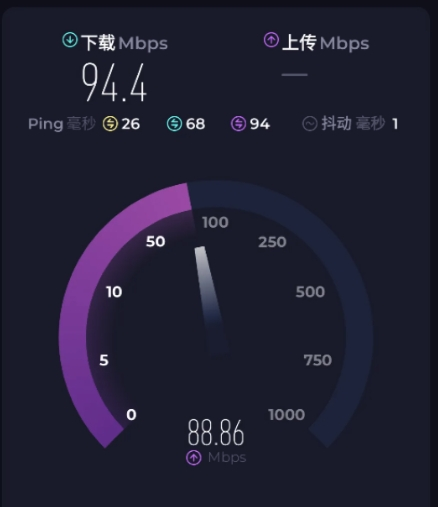

回国网络用户
需要访问国内网站、国内 App、国内视频和国内办公系统，希望体验更稳定。
主打回国VPN、回国网络、低延迟大带宽体验，支持 RouterOS、OpenWrt、 iKuai、Linux 软路由配置，以及星链回国、线路整理、带宽优化和长期维护。
如果你遇到的是回国网络不好用、软路由规则混乱、延迟高、带宽跑不满，或者想做星链回国和园区回国网络整理，这一类需求都适合直接联系。
需要访问国内网站、国内 App、国内视频和国内办公系统，希望体验更稳定。
需要配置或整理 RouterOS、OpenWrt、iKuai、Linux 软路由环境的用户。
已经有线路，但存在延迟高、波动大、带宽利用率低、维护困难等问题。
围绕低延迟、大带宽和稳定性目标，对回国线路和访问体验做整理与优化。
支持 RouterOS、OpenWrt、iKuai、Linux 软路由，整理分流、策略路由、DNS、NAT 和转发规则。
支持星链回国网络接入、基础网络整理和后续维护，适合特殊网络环境场景。
支持新环境搭建，也支持已有环境的修复、整理和持续维护。
以下为部分客户测速截图示例，用于展示回国网络带宽和延迟表现。实际体验会受地区、运营商、设备和时间段影响。



如果你想做回国VPN优化、回国网络优化、RouterOS / OpenWrt / iKuai 软路由配置、星链回国接入，或者已经有线路但体验不稳定，可以直接通过 Telegram 联系，沟通当前设备、网络环境和实际需求。
打开 Telegram 联系 @Langtaotian_bot